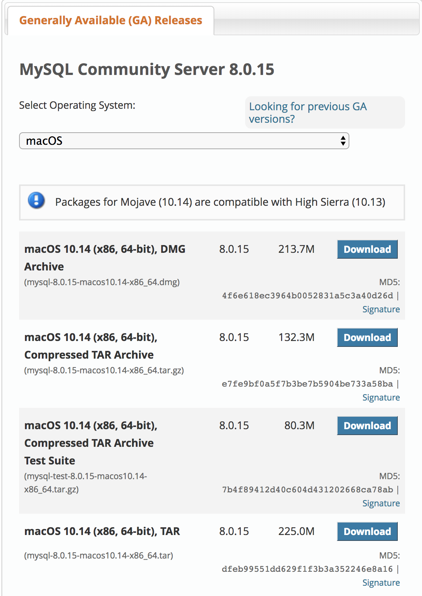
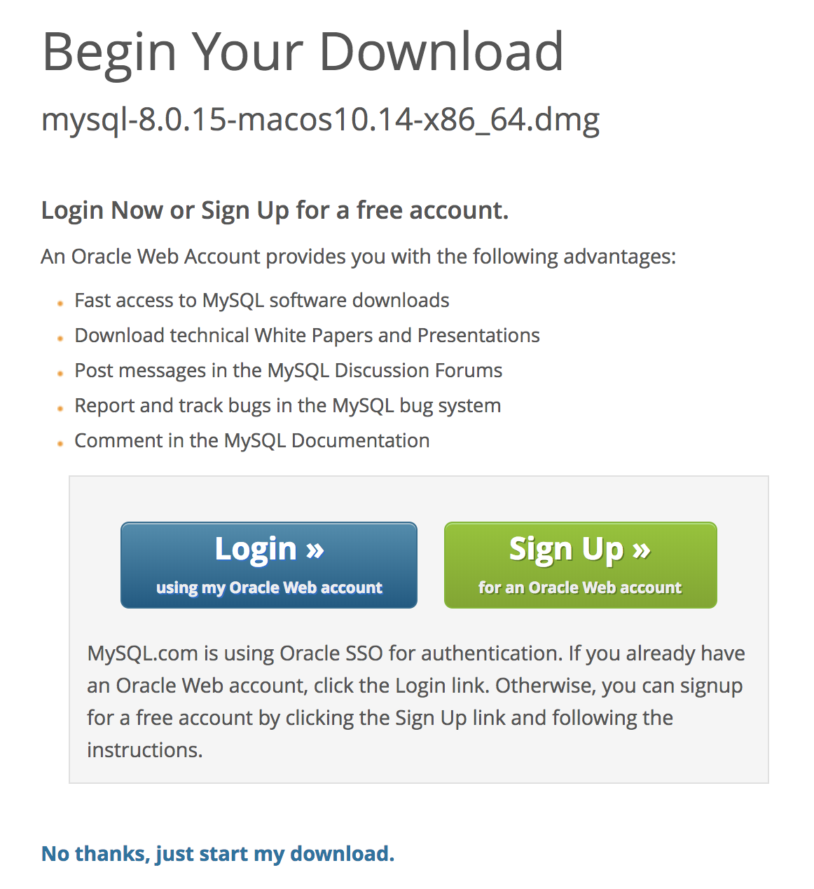
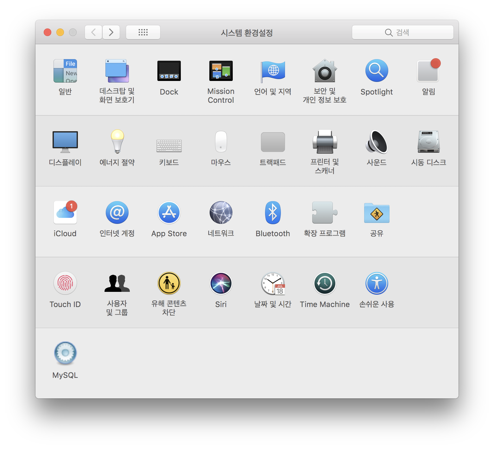
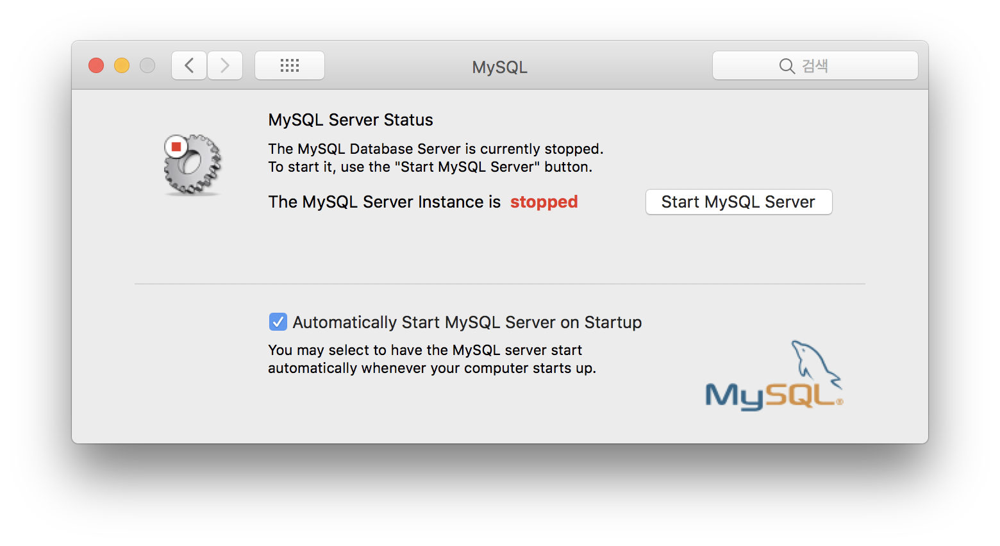
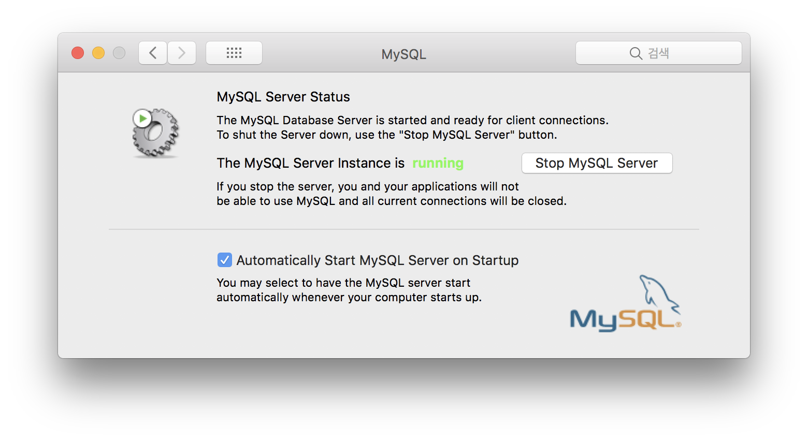

Database / MySQL 설치법(MAC 환경) 무료 데이터베이스
MAC 환경에서 MySQL 설치법과 간단한 문법, 구문
Database를 제어하는 MySQL. 가장 큰 장점은 바로 무료로 이용할 수 있다는 점이다. PHP로 서버와 MySQL을 제어해서, 웹페이지 이용자와 정보를 주고받아 커뮤니케이션을 하면서 정적인 웹페이지를 동적으로 사용할 수 있게 된다.
우리가 사용하는 채팅, 웹페이지 방문자의 게시판 글쓰기, 수정, 삭제를 가능케 해주는 것이 바로 Server 컴퓨터의 Database이다. MySQL 문법은 정말 쉽고 다른 데이터베이스 프로그램에 기본이 되어서, 문법만 익히면 MongoDB, Oracle 등 다른 데이터베이스를 다루는데 1도 어려움이 없다.
* MySQL Install / 설치
설치할때 발급되는 임시패스워드를 반드시 메모장에 따로 저장 해둬야한다!
MySQL downloads에서 DMG 형식의파일 을 다운 받는다. 
Login과 Sign up은 무시하고 제일 하단의
No thanks, Just start my download를 누른다. 
이후 설치된 MySQL의 DMG파일을 열어서 설치 한다.
시스템 환경설정에 들어가면 MySQL이 생성돼있다. MySQL을 연다. 
처음엔 server 상태가 stop으로 되어있다.

Start MySQL Server 버튼을 눌러 Running상태로 만들어준다. 
MySQL 실행
MySQL의 서버상태를 Running으로 변경되었다면 터미널을 열어 MySQL을 구동시켜보자.
$ cd /usr/local/mysql/bin위의 명령어를 입력해서 MySQL의 경로로 진입.
$ sudo ./mysql -p위 명령어를 입력하면 설치할때 발급받은 임시비밀번호를 입력하면 정상적으로 MySQL이 구동되는걸 볼 수 있다.
목차로 이동
같은 카테고리의 다른 글
Home| Database / MySQL 설치법(MAC 환경) 무료 데이터베이스 | 2019. 03. 11 |
|---|---|
| CSS 간단한 이해와 여러가지 속성 | 2019. 02. 26 |
| jekyll을 github 저장소에 동기화 시키기. git init, add, commit, push | 2019. 02. 23 |
| 납치태그 meta refresh 리디렉션 소스코드 | 2019. 02. 21 |
| 메타태그 정리 / SEO 검색엔진최적화 / meta tag | 2019. 02. 20 |
| Jekyll Install Mac OS X / 지킬 설치하는 법 for 맥 | 2019. 02. 18 |
| Github에 Jekyll로 RSS feed, sitemap, robots 생성하기 | 2019. 02. 17 |
| 튜너없이 기타 튜닝하는 법 / How to Guitar Tuning / (Sound Track 제공) | 2019. 02. 16 |
| 마크다운 기본 구문 / Markdown Basic Syntax | 2019. 02. 15 |
| 알고있으면 유용하고 간단한 Mac OS Terminal / 터미널 명령어 | 2019. 02. 15 |